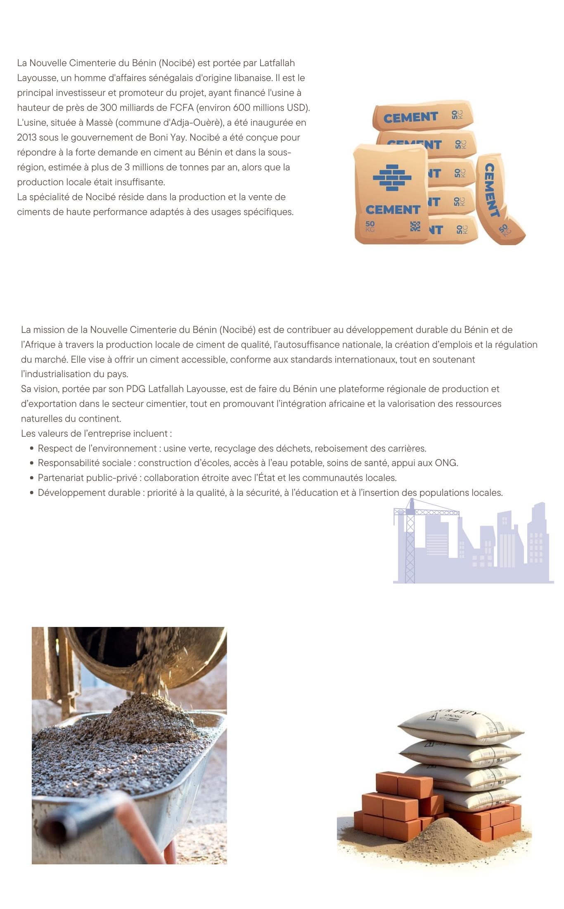

Bien construit, c'est nous !

Histoire de NOCIBE
Fondée en 2014, la Nouvelle Cimenterie du Bénin (NOCIBE) est devenue l’un des acteurs majeurs de l’industrie cimentière au Bénin. Grâce à une technologie moderne et à un processus conforme aux normes internationales, nous contribuons au développement des infrastructures nationales. Depuis sa création, NOCIBE s’engage à offrir un ciment de haute qualité tout en favorisant l’emploi local et la croissance économique du pays.
Nos valeurs
- ✔ Qualité : Produire un ciment fiable et conforme aux normes internationales.
- ✔ Innovation : Investir continuellement dans les technologies modernes.
- ✔ Responsabilité : Sécurité, respect de l’environnement et éthique du travail.
Nos spécialités
Nous proposons différents types de ciment adaptés aux besoins des professionnels du bâtiment :
- Ciment Portland pour les ouvrages courants
- Ciment à haute résistance pour les structures exigeantes
- Ciment spécialisé pour environnements humides et zones côtières
Notre engagement environnemental
NOCIBE met en œuvre plusieurs actions pour réduire son impact environnemental :
- Réduction des émissions de CO₂
- Utilisation rationnelle des ressources
- Technologies modernes réduisant la consommation énergétique
- Recyclage des déchets industriels
Notre impact social
Avec plus de 600 emplois directs et indirects, NOCIBE participe activement au développement économique du Bénin. Nous soutenons la formation des jeunes et collaborons avec des partenaires locaux pour renforcer les compétences nationales.
Capacité et performance
Grâce à une capacité de production annuelle de plus de 1 500 000 tonnes de ciment, NOCIBE assure un approvisionnement régulier et fiable pour tous les chantiers du pays.